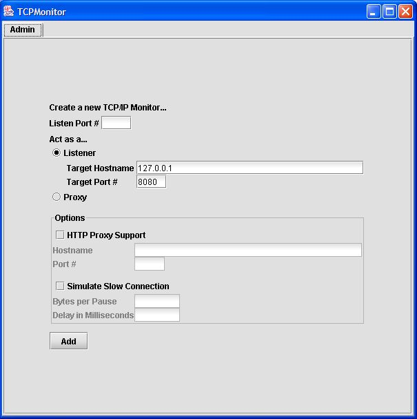
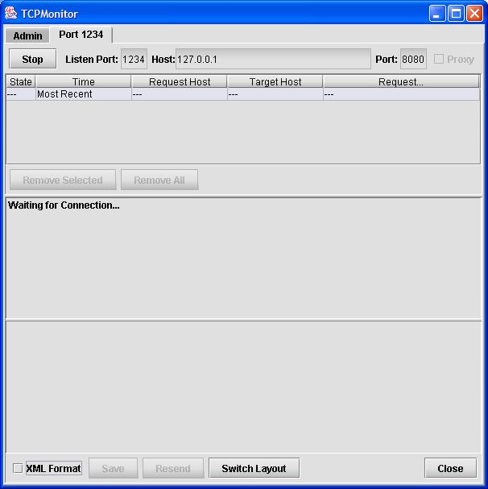

|
|

|
|
|
|
| Apache | WS |
WebServices - AxisAxis ユーザガイド
バージョン 1.2
目次
はじめにAxis、Apache SOAP の第三世代へようこそ! SOAP とは何ですか?SOAP はアプリケーション間通信のための XML に基づく通信プロトコルであり、またエンコーディングフォーマットでもあります。もともとは Microsoft と Userland software によって考え出されましたが、いくつもの世代を経て進化し、現在の仕様である SOAP 1.1 [英語] は人気と共に利用数もすごい勢いで上昇しています。W3C の XML Protocol working group [英語] は SOAP を本当にオープンな標準に変える過程にいて、現時点では、1.1 の仕様のいくつかのあいまいな部分をなくした SOAP 1.2 の working draft をリリースしました。 SOAP はプラットフォームと言語をまたがる分散計算アプリケーション、いわゆるWebサービスの基幹であると広く見られています。 Axis とは何ですか?Axis は本質的には SOAP エンジン -- クライアント、サーバ、ゲートウェイなどの SOAP 処理装置を構築するためのフレームワークです。Axis の現在のバージョンは Java で書かれていますが、Axis のクライアント側の C++ 実装が現在開発されています。 ただ、Axis は単なる SOAP エンジンではありません -- 以下のものも含んでいます。
Axis は (IBM にて "SOAP4J" として始まった) Apache SOAP の第三世代です。2000年後半に Apache SOAP v2 のコミッタ達は、エンジンをより柔軟に、設定可能に、SOAP と W3C が次に出す XML プロトコル仕様の両方を扱えるようにする方法について議論し始めました。 しばらくして、ゼロからの再アーキテクチャ化が必要であることが明確になりました。バージョン2のコミッタの数人はとてもよく似たデザインを提案しました。そのデザインは、全てがとても柔軟で組み合わせ可能な方法でちょっとした機能を実装できるメッセージ "ハンドラ" の、設定可能な "チェイン" に基づいています。 何ヶ月か続いた議論と、この方向性でのコーディングの結果、Axis は以下の主要な特徴を持つようになりました。
Axis を利用して楽しんでください。Axis はオープンソースの成果であることに留意してください。つまり、もし Axis のコードに新しい機能やバグの修正が必要だと感じたら、ぜひ参加して手を貸してください。Axis 開発者コミュニティはあなたの参加を歓迎します。また、Axis が何を意味しているか気にしているかもしれないので述べておきます。Axis は Apache EXtensible Interaction System (Apache の拡張性のある相互作用システム) を表していて、その設定可能な SOAP エンジンをしゃれた方法で暗示しています。 あなたの意見を聞かせてください Axis パッケージについてのフィードバックを "axis-user@ws.apache.org" へお送りください。また、Axis は Apache のバグ追跡と機能リクエストのデータベースである jira [英語] に登録されています。 このリリースに含まれているものこのリリースは以下の機能を含んでいます。
やり残していることまだ行う必要があると私達が考えているもののリスト [英語] をクリックしてください。もしあなたが興味があり手伝うことができるのならば、手伝うことも考慮に入れてください。 Axis のインストールとこのガイドの利用方法Axis を J2EE サーバ上でWebアプリケーションとしてインストールする方法の説明については Axis インストールガイドをご覧下さい。 このガイドにある例を実行する前に、CLASSPATH が以下のパスを含んでいることを確認する必要があります (もし CVS チェックアウトから Axis を構築したのであれば、axis-1_1/lib ではなく xml-axis/java/build/lib になります)。
Axis でWebサービスを楽しむ基本 - はじめまずはじめに、Apache にある公開 Axis サーバの echoString メソッドを呼ぶWebサービスクライアントの例を見てみましょう。 1 import org.apache.axis.client.Call;
2 import org.apache.axis.client.Service;
3 import javax.xml.namespace.QName;
4
5 public class TestClient {
6 public static void main(String [] args) {
7 try {
8 String endpoint =
9 "http://ws.apache.org:5049/axis/services/echo";
10
11 Service service = new Service();
12 Call call = (Call) service.createCall();
13
14 call.setTargetEndpointAddress( new java.net.URL(endpoint) );
15 call.setOperationName(new QName("http://soapinterop.org/", echoString"));
16
17 String ret = (String) call.invoke( new Object[] { "Hello!" } );
18
19 System.out.println("Sent 'Hello!', got '" + ret + "'");
20 } catch (Exception e) {
21 System.err.println(e.toString());
22 }
23 }
24 }
(このファイルは samples/userguide/example1/TestClient.java [英語] にあります) ネットワークが接続されていると仮定すると、このプログラムは以下のようにして実行することができます。 % java samples.userguide.example1.TestClient Sent 'Hello!', got 'Hello!' % 一体何が起こったのでしょうか。11、12行目で新しいServiceオブジェクトとCallオブジェクトを生成しました。これらは JAX-RPC 標準のオブジェクトで、呼び出すサービスに関するメタデータを格納するために利用されます。14行目でエンドポイントの URL (SOAP メッセージの宛先)を設定しました。15行目でWebサービスの操作 (メソッド) 名を定義しました。そして17行目でパラメータの配列 (この場合は単なる1つの文字列) を渡して目的のサービスを実際に呼び出しています。 インターネット上に流れる SOAP リクエストを見ることによって、この引数に何が起こっているのかを確認することができます (色をつけた部分を見てください。この部分が上の呼び出しにおける値と一致していることがわかります) <?xml version="1.0" encoding="UTF-8"?>
<SOAP-ENV:Envelope xmlns:xsd="http://www.w3.org/2001/XMLSchema"
xmlns:SOAP-ENV="http://schemas.xmlsoap.org/soap/envelope/"
xmlns:xsi="http://www.w3.org/2001/XMLSchema-instance">
<SOAP-ENV:Body>
<ns1:echoString xmlns:ns1="http://soapinterop.org/">
<arg0 xsi:type="xsd:string">Hello!</arg0>
</ns1:echoString>
</SOAP-ENV:Body>
</SOAP-ENV:Envelope>
この文字列引数は自動的に XML にシリアライズされ、サーバは同一の文字列を返し、クライアントはデシリアライズして表示しています。 注意: クライアントとサーバ間でやりとりされている XML を実際に見るには、含まれる tcpmon ツール、または SOAP モニタツールを使用します。概要については付録をご覧下さい。 パラメータ命名規則上の例において、Axis が SOAP メッセージ内の XML にエンコードされた引数に対して、自動的に "arg0"、"arg1" などと命名していることがわかります (この場合は "arg0" のみです)。これを変更するのは簡単です。invoke() を呼び出す前に、各パラメータに対して addParameter を、戻り値に対して setReturnType を呼び出す必要があります。これは次のようになります。 call.addParameter("testParam",
org.apache.axis.Constants.XSD_STRING,
javax.xml.rpc.ParameterMode.IN);
call.setReturnType(org.apache.axis.Constants.XSD_STRING);
これにより、呼び出しにおける第1 (そしてたった一つの) パラメータに testParam という名前が割り当てられます。また、ここではパラメータの型 (org.apache.axis.Constants.XSD_STRING) と、このパラメータが入力パラメータ、出力パラメータ、あるいは入出力パラメータかを定義しています。この場合は入力パラメータです。これでプログラムを実行すると、以下のようなメッセージを受け取ります。 <?xml version="1.0" encoding="UTF-8"?>
<SOAP-ENV:Envelope xmlns:xsd="http://www.w3.org/2001/XMLSchema"
xmlns:SOAP-ENV="http://schemas.xmlsoap.org/soap/envelope/"
xmlns:xsi="http://www.w3.org/2001/XMLSchema-instance">
<SOAP-ENV:Body>
<ns1:echoString xmlns:ns1="http://soapinterop.org/">
<testParam xsi:type="xsd:string">Hello!</testParam>
</ns1:echoString>
</SOAP-ENV:Body>
</SOAP-ENV:Envelope>
パラメータが期待した通り "testParam" と命名されていることに注意してください。 "型なし" サーバとの相互運用上の例では、invoke() の戻り値の型、つまり Object を適切な "本当の" 型にキャストしました。例えば echoString メソッドが String を返すことがわかっていたので、client.invoke() からは String が返されることを当てにしていました。少し立ち止まって、これがどのようにして起こったのかを調べ、潜在的な問題に光をあててみましょう (もちろん解決策があるので心配することはありません)。 echoString メソッドの典型的なレスポンスは以下のようになります。 <?xml version="1.0" encoding="UTF-8"?>
<SOAP-ENV:Envelope xmlns:xsd="http://www.w3.org/2001/XMLSchema"
xmlns:SOAP-ENV="http://schemas.xmlsoap.org/soap/envelope/"
xmlns:xsi="http://www.w3.org/2001/XMLSchema-instance">
<SOAP-ENV:Body>
<ns1:echoStringResponse xmlns:ns1="http://soapinterop.org/">
<result xsi:type="xsd:string">Hello!</result>
</ns1:echoStringResponse>
</SOAP-ENV:Body>
</SOAP-ENV:Envelope>
赤色でハイライトした部分を見てください。この属性は、スキーマ型宣言で、Axis はこれを利用してその要素の内容が何であるかを解明します。この場合は、Java の String オブジェクトにデシリアライズ可能であるとわかります。多くのツールキットはこの種の明示的な型情報を XML 内に埋め込み、"自己記述"されたメッセージにします。一方、いくつかのツールキットは以下のようなレスポンスを返します <?xml version="1.0" encoding="UTF-8"?>
<SOAP-ENV:Envelope xmlns:xsd="http://www.w3.org/2001/XMLSchema"
xmlns:SOAP-ENV="http://schemas.xmlsoap.org/soap/envelope/"
xmlns:xsi="http://www.w3.org/2001/XMLSchema-instance">
<SOAP-ENV:Body>
<ns1:echoStringResponse xmlns:ns1="http://soapinterop.org/">
<result>Hello, I'm a string!</result>
</ns1:echoStringResponse>
</SOAP-ENV:Body>
</SOAP-ENV:Envelope>
メッセージに型がありません。では <result> 要素をどの Java オブジェクトにデシリアライズするか、どのようにして判断するのでしょうか。その答えはメタデータ、つまりデータに関するデータです。この場合、戻り値として何を求めるのかを伝える、サービスの記述が必要です。これを Axis のクライアント側で行う方法を以下に示します。 call.setReturnType( org.apache.axis.Constants.XSD_STRING ); このメソッドは、もし返された要素に型がなければ、戻り値の xsi:type 属性が定義済みの SOAP String 型に設定されているかのように扱うべきであることを、Axis クライアントに伝えます。(この例が動作するのを相互運用エコーテストクライアント、samples/echo/TestClient.java で見ることができます。) 期待する戻り値の Java クラスを指定することができる似たようなメソッドもあります。 call.setReturnClass(String.class); これで、クライアントとして SOAP サービスにアクセスするための基礎を理解しました。ではどのようにして自分のサービスを公開するのでしょうか? Axis を用いてWebサービスを公開する以下のような単純なクラスがあるとします。 public class Calculator {
public int add(int i1, int i2) {
return i1 + i2;
}
public int subtract(int i1, int i2) {
return i1 - i2;
}
}
(このファイルは samples/userguide/example2/Calculator.java [英語] にあります。) このクラスを SOAP 経由で利用可能にするにはどうすればいいでしょうか? この質問にはいくつかの解答がありますが、Axis が提供する最も簡単な方法から始めます。この方法はほとんど何の努力も必要としません。 JWS (Java Web Service) ファイル - 瞬間デプロイまずはステップ1です。上記の .java ファイルを webapp ディレクトリにコピーし、ファイル名を "Calculator.jws" に変更します。つまり以下のようなことをします。 % copy Calculator.java <your-webapp-root>/axis/Calculator.jws 次にステップ2ですが、、、あれ、少し待ってください。もう終わっています。以下の URL でサービスにアクセスできるはずです (Axis ウェブアプリケーションがポート8080にあることを想定しています)。 http://localhost:8080/axis/Calculator.jws Axis は自動的にファイルを配置し、クラスをコンパイルし、SOAP 呼び出しをサービスのクラスの Java 呼び出しに正確に変換します。samples/userguide/example2/CalcClient.java に計算機クライアントがあるので試してみてください。これは次のようにして利用します。 % java samples.userguide.example2.CalcClient -p8080 add 2 5 Got result : 7 % java samples.userguide.example2.CalcClient -p8080 subtract 10 9 Got result : 1 % ("-p8080" をあなたの J2EE サーバが起動しているポートに置き換える必要があるかもしれないことに注意してください 重要: JWS Webサービスは単純なWebサービスを対象としています。ページの中でパッケージは使えず、また、コードは実行時にコンパイルされるのでデプロイした後ではないとエラーを見つけることはできません。製品レベルの品質のWebサービスはカスタムデプロイの Java クラスを利用すべきです。 カスタムデプロイ - WSDD の導入JWS ファイルはクラスをWebサービスにする迅速な方法ですが、それが必ずしも最良の選択とは限りません。まず一つに、ソースコードが必要なことです。ソースがなく、すでに存在しているクラスをあなたのシステム上で公開したい場合があるかもしれません。また、サービスのアクセスのさせ方の設定の項目数がとても制限されています。カスタム型マッピングを指定することも、サービスが実行される際にどのハンドラが呼び出されるかを制御することもできません。(今後のための注意: Axis チームと Java SOAP コミュニティ全体は、必要に応じてこの種のメタデータをソースファイルに埋め込むことができる方法を検討しています。引き続き注目していてください!) ディスクリプタ経由のデプロイAxis で利用可能な柔軟性を十分に利用するには、Axis Web Service Deployment Descriptor (WSDD) フォーマットに精通する必要があります。デプロイメントディスクリプタには、Axis にデプロイさせたい、すなわち Axis エンジンから利用できるようにさせたいもの全てが含まれています。デプロイする最も一般的なものはWebサービスなので、基本的なサービスのためのデプロイメントディスクリプタを見ていきましょう (このファイルは samples/userguide/example3/deploy.wsdd [英語] です)。 <deployment xmlns="http://xml.apache.org/axis/wsdd/"
xmlns:java="http://xml.apache.org/axis/wsdd/providers/java">
<service name="MyService" provider="java:RPC">
<parameter name="className" value="samples.userguide.example3.MyService"/>
<parameter name="allowedMethods" value="*"/>
</service>
</deployment>
実際のところとても単純です。最も外側の要素は、これが WSDD デプロイであることをエンジンに伝え、また、"java" 名前空間を定義しています。そして、service 要素はサービスを実際に定義しています。サービスとは対象とされたチェインです (アーキテクチャガイドをご覧下さい)。これはサービスが、リクエストフロー、ピボットハンドラ (サービス側から見ると "プロバイダ"と呼ばれています)、レスポンスフローの一部、あるいは全てを含んでいることを意味しています。上記の場合、プロバイダは "java:RPC" です。これは Axis に組み込まれていて、Java RPC サービスを表しています。実際にこれを扱うクラスは org.apache.axis.providers.java.RPCProvider です。この後で、異なるスタイルのサービスやそれらのプロバイダについて詳しく見ていきます。 RPCProvider に対して、正しいクラス (例えば、samples.userguide.example3.MyService) のインスタンス化と呼び出しを行うように伝えなければなりません。これは <parameter> タグを含めることで行います。service に、クラス名を設定するパラメータと、そのクラスのどの public メソッドも SOAP 経由で呼ぶことができる (これが "*" の意味するところです。利用可能なメソッド名のリストをスペースかコンマで区切ったリストを使用することで SOAP がアクセス可能なメソッドを制限することもできます) ことをエンジンに伝えるもう一つのパラメータを与えます。 高度な WSDD - より多くのオプションを指定するWSDD ディスクリプタにはサービスに関するその他の情報も含めることができますし、"ハンドラ" と呼ばれる Axis のその他の部品も含めることができます。ハンドラについては後ほどの節で扱います。 スコープのあるサービスAxis はサービスオブジェクト (メソッドを実装する実際の Java オブジェクト) を3通りの方法でスコープする方法を提供します。デフォルトの "request" スコープは、サービスに対して SOAP リクエストが来るたびに新しいオブジェクトを生成します。"application" スコープは、全てのリクエストに対してサービスする単一の共有オブジェクトを生成します。"session" スコープは、サービスにアクセスするセッションが有効な各クライアントに対して新しいオブジェクトを生成します。スコープオプションを指定するには、以下のようにサービスに <parameter> を追加します ("値" は request、session、applicationのいずれかです)。 <service name="MyService"...> <parameter name="scope" value="value"/> ... </service> AdminClient の利用WSDD ファイルができたら、記述したサービスを実際にデプロイするために Axis にこの WSDD ファイルを送る必要があります。これを AdminClient、つまり "org.apache.axis.client.AdminClient" クラスを使用して行います。もし Tomcat 以外のサーバに Axis を配備した場合は -p <port> 引数を使用する必要があります。デフォルトのポートは8080です。典型的な AdminClient の呼び出しは次のようになります。 % java org.apache.axis.client.AdminClient deploy.wsdd <Admin>Done processing</Admin> このコマンドで、サービスが SOAP 経由でアクセス可能になりました。Client クラスを実行して確認しましょう。次のようになるはずです。 % java samples.userguide.example3.Client -lhttp://localhost:8080/axis/services/MyService "test me!" You typed : test me! % デプロイが本当に行われたのか自分で確認したいのであれば、そのサービスをアンデプロイし、もう一度そのサービスを呼び出してみてください。example3/ ディレクトリに "undeploy.wsdd" ファイルがあります。上記で deploy.wsdd ファイルで行ったのと同じやり方で使用することができます。undeploy.wsdd ファイルに対して AdminClient を実行し、もう一度 Client サービスを試してみて何が起こるか見てみましょう。 AdminClient を使用して、サーバにデプロイされている全てのコンポーネントのリストを取得することもできます。 % java org.apache.axis.client.AdminClient list <big XML document returned here> そこにはサービス、ハンドラ、トランスポートなどが現れるはずです。このリストは、サーバにある "server-config.wsdd" ファイルの完全なコピーであることに留意してください。これについては後ほど詳細を見ていきます。 その他のデプロイ - ハンドラとチェインAxis エンジンのさらに強力な機能のいくつかを見ていきましょう。サービスが何回呼ばれたかを追跡する場合を想定します。まさにこれを行うサンプルハンドラが samples/log ディレクトリにあります。このようなハンドラクラスを利用するには、まずハンドラ自体をデプロイし、サービスのデプロイ時にそのハンドラに与えた名前を利用します。ここにサンプルの deploy.wsdd ファイル (これは samples/userguide にある example4 です) を示します。 <deployment xmlns="http://xml.apache.org/axis/wsdd/"
xmlns:java="http://xml.apache.org/axis/wsdd/providers/java">
<!-- define the logging handler configuration -->
<handler name="track" type="java:samples.userguide.example4.LogHandler">
<parameter name="filename" value="MyService.log"/>
</handler>
<!-- define the service, using the log handler we just defined -->
<service name="LogTestService" provider="java:RPC">
<requestFlow>
<handler type="track"/>
</requestFlow>
<parameter name="className" value="samples.userguide.example4.Service"/>
<parameter name="allowedMethods" value="*"/>
</service>
</deployment>
最初の節は samples.userguide.example4.LogHandler クラスによって実装されている "track" と呼ばれるハンドラを定義しています。このハンドラにオプションを渡して、どのファイルにメッセージを書き込むかを指定しています。 次の節で、LogTestService というサービスを定義しています。これは上記の最初の例で見たのと同じ RPC サービスです。違いは <service> の中の <requestFlow> 要素です。これはサービスが呼び出されたとき、プロバイダの前に呼び出されるべきハンドラの集合を指し示します。"track" への参照を挿入することで、このサービスが呼び出されるたびにメッセージのログが取られることになります。 リモート管理Axis サーバはデフォルトでは、管理リクエストをそのマシンからのみ受け付けるように設定されていることに注意してください。リモート管理を有効にするには、AdminService の "enableRemoteAdmin" プロパティを true に設定する必要があります。これを行うには、webapp の WEB-INF ディレクトリから "server-config.wsdd" ファイルを探し、以下のようにオプションを追加します。 <service name="AdminService" provider="java:MSG"> <parameter name="className" value="org.apache.axis.util.Admin"/> <parameter name="allowedMethods" value="*"/> <parameter name="enableRemoteAdmin" value="true"/> </service> 警告: リモート管理を有効にすると、認証されていない相手にあなたのマシンへのアクセス権を与えることになります。もしリモート管理を有効にするならば、必ず設定にセキュリティを追加してください。 サービススタイル - RPC、Document、Wrapped、MessageAxis のサービスには4種類の "スタイル" があります。RPC サービスは、SOAP RPC 規約、および SOAP "5章" エンコーディングを使用します。Document サービスはいかなるエンコーディングも使用しません (ですから具体的に言うと、インターネット上で multiref オブジェクトのシリアライゼーションや SOAP スタイルの配列を見ることはありません) が、依然として XML<->Java データバインディングを行います。Wrapped サービスは document サービスとほとんど同じで、SOAP ボディ全体を一つの大きな構造にバインディングするというよりかは、個別のパラメータに "unwrap" する、という点で異なります。Message サービスは、いかなる型マッピングやデータバインディングなしに、SOAP エンベロープの中で任意の XML を受け取り、また返します。もし行き交う SOAP エンベロープにおいて生の XML を使用したいのであれば、message サービスを書きましょう。 RPC サービスAxis では RPC サービスがデフォルトです。<service ... provider="java:RPC"> あるいは <service ... style="RPC"> でサービスをデプロイすると RPC サービスになります。RPC サービスは SOAP RPC とエンコーディング規則に従います。つまり、RPC サービスの XML は上記の例の "echoString" のようになります。それぞれの RPC 呼び出しが、その操作名と一致する外側の要素としてモデル化され、その子要素として、それぞれがその操作のパラメータにマッピングされる要素を持ちます。Axis はサービスに与えられた XML を Java オブジェクトにデシリアライズし、サービスから返される Java オブジェクトを XML にシリアライズします。RPC サービスはデフォルトでは SOAP 5章のエンコーディング規則に従うので、オブジェクトは "multi-ref" シリアライゼーションでエンコードされます。これによりオブジェクトグラフがエンコード可能になります。(multi-ref シリアライゼーションの詳細については SOAP 仕様をご覧下さい。) Document / Wrapped サービスdocument サービスと wrapped サービスは、どちらもデータに対して SOAP エンコーディングを使用せずに、単に普通の XML スキーマを使用するという点で似ています。しかしながら両方のサービスとも、Axis は Java 表現を XML に "バインド" するので (詳細は データバインディング 節をご覧下さい)、直接 XML 構造を扱うのではなく、Java オブジェクトを扱うことになります。 document サービスと wrapped サービスの違いを説明するには、注文書を含む SOAP メッセージのサンプルで行うのがいいでしょう。 <soap:Envelope xmlns="http://xml.apache.org/axis/wsdd/"
xmlns:java="http://xml.apache.org/axis/wsdd/providers/java">
<soap:Body>
<myNS:PurchaseOrder xmlns:myNS="http://commerce.com/PO">
<item>SK001</item>
<quantity>1</quantity>
<description>Sushi Knife</description>
</myNS:PurchaseOrder>
</soap:Body>
</soap:Envelope>
PurchaseOrder に関連するスキーマは以下のようになります。 <schema targetNamespace="http://commerce.com/PO">
<complexType name="POType">
<sequence>
<element name="item" type="xsd:string"/>
<element name="quantity" type="xsd:int"/>
<element name="description" type="xsd:string"/>
</sequence>
</complexType>
<element name="PurchaseOrder" type="POType"/>
</schema>
document スタイルのサービスでは以下のようなメソッドにマッピングされます。 public void method(PurchaseOrder po) つまり、<PurchaseOrder> 要素全体が、3つのフィールドを持つ単一の bean としてメソッドに渡されます。一方、wrapped スタイルのサービスでは、以下のようなメソッドにマッピングされます。 public void purchaseOrder(String item, int quantity, String description) "wrapped" サービスの場合、<PurchaseOrder> 要素は正しい操作を指し示すだけの "wrapper (ラッパ)" です (これが名前の由来です)。外側の要素を "unwrap (ラッパを解く)" し、内部の要素をそれぞれパラメータとして取り出すことにより、メソッドの引数を得ることができます。 document スタイル、あるいは wrapped スタイルは以下のように WSDD に指し示されています。
<service ... style="document"> for document style WSDL ドキュメントから始めるのであれば、ほとんどの場合 document サービスか wrapped サービスかで悩む必要はありません(下をご覧下さい)。 message サービス最後に "message" スタイルサービスにたどり着きました。Axis に身を引いてもらって、XML を Java オブジェクトに変換する代わりに自分で実際の XML のコーディングを行う際に message スタイルサービスを利用します。message スタイルサービスのメソッドには4つの有効なシグネチャがあります。
public Element [] method(Element [] bodies);
最初の2つは引数として DOM Element あるいは SOAPBodyElement の配列をメソッドに渡します。それらの配列はエンベロープ内の <soap:body> の内側のそれぞれの XML 要素に対して1つの要素を含んでいます。 3つめのシグネチャは引数として <soap:body> を表している DOM Document を渡し、同じく DOM Document を返します。 4つめのシグネチャは引数として、リクエストメッセージとレスポンスメッセージを表している2つの SOAPEnvelope オブジェクトを渡します。このシグネチャは、サービスメソッドの中でヘッダを参照したり修正したりする際に利用します。レスポンスエンベロープに入れたものは全て、戻る際に呼び出し元に自動的に返されます。レスポンスエンベロープにはすでに他のハンドラによって挿入されたヘッダが含まれているかもしれないことに注意してください。 message の例 message サービスのサンプルは samples/message/MessageService.java [英語] にあります。サービスのクラスである MessageService は一つの public メソッド echoElements を持ちます。このメソッドは、上記4つのメソッドシグネチャの内の最初のメソッドシグネチャに一致します。 public Element[] echoElements(Element [] elems) MsgProvider ハンドラは、入力メッセージの SOAP ボディ直下の子に対応する org.w3c.dom.Element オブジェクトの配列を引数として、メソッドを呼びます。この配列はたいてい単一の Element (おそらく何かしらの取り決められたスキーマに従った XML ドキュメントのルート要素) を要素として持ちますが、SOAP ボディは任意の数の子を扱うことができます。このメソッドは、レスポンスメッセージの SOAP ボディの中で返されるべき Element[] 配列を返します。 message サービスは WSDD ファイルを用いてデプロイする必要があります。以下に MessageService クラス用の完全な WSDD を示します。 <deployment name="test" xmlns="http://xml.apache.org/axis/wsdd/"
xmlns:java="http://xml.apache.org/axis/wsdd/providers/java"
xmlns:xsi="http://www.w3.org/2000/10/XMLSchema-instance">
<service name="MessageService" style="message">
<parameter name="className" value="samples.message.MessageService"/>
<parameter name="allowedMethods" value="echoElements"/>
</service>
</deployment>
"style" 属性が RPC デプロイの例と異なっていることに注意してください。"message" スタイルは、このサービスが org.apache.axis.providers.java.RPCProvider ではなく org.apache.axis.providers.java.MsgProvider によって扱われるべきであることを Axis に伝えます。 このサービスをテストするには、デプロイし、samples.message.TestMsg を実行します (テストドライバが何をするかはソースをご覧下さい)。 XML <-> Axis における Java データマッピングJava 型を SOAP/XML 型にマッピングする方法相互運用性 (interoperability、略して interop) は SOAP 実装間で進行中の課題です。サービスを他のプラットフォームや実装と連携させるには、この問題を理解する必要があります。この問題に関するいくつかの外部サイトの記事があり、これらは初めて理解するのに最適な場所です。Axis における Java 型と WSDL/XSD/SOAP 間の基本的なマッピングは JAX-RPC 仕様で決められています。仕様 [英語] の4章と5章を読み、どのように変換されるかを完全に理解してください。以下に主要なポイントを示します。 WSDL から Java への標準的なマッピング
オブジェクトが nillable でもよいと WSDL が宣言している、つまり呼び出し元が nil の値を返すことを選択できるのであれば、プリミティブ型はそのラッパクラス (Byte、Double、Boolean など) に置き換えられます。 SOAP エンコーディングのデータ型XSD データ型は、全て nillable である SOAP 5章のデータ型に基づいているので、ラッパクラスにのみマッピングされます。これらの型があるのは、これらが全て "ID" と "HREF" 属性をサポートしているからです。ですからこれらは RPC エンコードされたコンテキストで multi-ref シリアライゼーションをサポートする際に利用されます。 例外例外は多くの混乱を招く分野で、実際この節の著者も、全てがどのようにして機能しているのか、特に相互運用性の観点からは完全に理解していません。つまりこの節は不完全で、もしかすると不確かであると受け止めてください。JAX-RPC 仕様の5.5.5節と14章もご覧下さい。 RemoteExceptions から SOAP Faults へのマッピングもしサーバのメソッドが java.rmi.RemoteException を投げたら、これは SOAP Fault にマッピングされます。この faultcode はそのフォルトのクラス名を含みます。受信者は、そのクラス名に対してフォルトのボディをデシリアライズすることを期待されます。 明らかに、もし受信者が受け取ったフォルトのインスタンスの作成方法を知らなかったらこの仕組みは成り立ちません。サービスの WSDL ディスクリプションに例外クラスの情報を含める、あるいは送信者と受信者が実装を共有しない限り、信頼できる方法として、サブクラスではなく java.rmi.RemoteException インスタンスを投げるしかありません。 そのような例外を他の言語による実装が受け取ったら、クラスの名前を faultCode として理解しますが、例外のボディをパースすることはできません。そこで何が起こるかを知るには、試してみる必要があります。 例外は wsdl:fault 要素として表されるもしメソッドが、インスタンスではない、あるいは java.rmi.RemoteException のサブクラスではない Exception を投げると印されていたら、事情は微妙に変わってきます。この例外はもはや SOAP Fault ではなく、メソッドの WSDL で wsdl:fault として記述されます。JAX-RPC 仕様によると、Exception のサブクラスは、マーシャルされるオブジェクト内の全てのフィールドにアクセスできるアクセサメソッドと同フィールド (つまり、同じ名前と同じ型の引数) 全てをパラメータとして引数に取るコンストラクタを持つ必要があります。これは標準的な JavaBean [英語] の一種の不変変形です。オブジェクト内のフィールドは、WSDL に確実にマッピングできるデータ型である必要があります。 もし例外がこの仕様を満たせば、メソッドを記述している WSDL は例外も記述していることになり、それにより呼び出し側はプラットフォームに関係なくその例外のスタブ実装を生成することができます。 繰り返しになりますが、相互運用性を確かなものにするには多少試みが必要です。呼び出し側の言語には例外の概念がないかもしれない、あるいは例外がどのように扱われるべきかという規則が少なくとも Java ほど厳密ではないかもしれないということを覚えておいてください。 制限された相互運用性において、Axis が SOAP 経由で送信できるものJava の CollectionHashtable のように、Collection クラスのいくつかはシリアライザを持っていますが、他の SOAP 実装との正式な相互運用性はなく、また SOAP 仕様では複雑なオブジェクトについて扱っていません。オブジェクトの集合を送信する最も確実な方法は、配列を利用することです。Java による SOAP 実装の多くは、ハッシュテーブルのマーシャルとアンマーシャルを行えますが、とりわけ .NET ではハッシュテーブルを扱うことができません。 Axis が SOAP 経由で送信できないもの事前登録していない任意のオブジェクト通信路上に任意の Java オブジェクトを送信することはできませんし、相手側でそれが理解されることも期待してはいけません。RMI を用いれば Serializable な Java オブジェクトを送受信することはできますが、これは両側で Java を実行しているから可能なのです。Axis は登録された Axis シリアライザがあるオブジェクトしか送信しません。このドキュメントの後の方で、BeanSerializer を利用して、アクセッサとミューテータの JavaBean パターンに従う任意のクラスをシリアライズする方法を示しています。オブジェクトを扱うには、この BeanSerializer を利用してクラスを登録する必要がある、あるいは Axis にシリアライゼーションのサポートが組み込まれている必要がある、のいずれかです。 リモート参照リモート参照は SOAP 仕様や JAX-RPC 仕様の一部ではありません。オブジェクト参照を返し、呼び出し側がそれを SOAP 呼び出しのエンドポイントとして、あるいは他の呼び出しのパラメータとして利用するようにすることはできません。その代わりに他の参照機構を用いる必要があります。例えば通信路を介して渡せる、HashMap 内に、数字あるいは文字をキーとしてデータを保持する、といった方法です。 Bean のエンコード - BeanSerializerAxis には、get/set アクセッサの標準的な JavaBean [英語] パターンに従う任意の Java クラスを、コードを一切書かずにシリアライズ/デシリアライズする能力があります。これを行うのに必要なことは、どの Java クラスがどの XML Schema 型にマッピングされるかを Axis に指定するだけです。bean マッピングの設定は以下のようになります。 <beanMapping qname="ns:local" xmlns:ns="someNamespace"
languageSpecificType="java:my.java.thingy"/>
<beanMapping> タグは Java クラス (おそらく bean) を XML QName にマッピングします。このタグには2つの重要な属性、qname と languageSpecificType があることに注意してください。この場合、"my.java.thingy" クラスを XML QName [someNamespace]:[local] にマッピングしています。 実際これがどのように機能するか見てみましょう。samples/userguide/example5/BeanService.java [英語] をご覧下さい。サービスメソッドの引数が Order オブジェクトであることに注目してください。Order は Axis がデフォルトで理解できる基本型ではないので、型マッピングなしにこのサービスを実行しようとすると失敗に終わります。(もしこれを自分で試してみたいのなら、example5 ディレクトリにある bad-deploy.wsdd ファイルを利用できます。) しかし、もしデプロイに beanMapping を追加すれば、全てうまくいきます。以下にこの例を実行させる方法 (example5 ディレクトリから) を示します。 % java org.apache.axis.client.AdminClient -llocal:///AdminService deploy.wsdd <Admin>Done processing</Admin> % java samples.userguide.example5.Client -llocal:// Hi, Glen Daniels! You seem to have ordered the following: 1 of item : mp3jukebox 4 of item : 1600mahBattery If this had been a real order processing system, we'd probably have charged you about now. % Bean が十分ではない場合 - カスタムシリアライゼーションJWS デプロイが、たまに全ての要求を満たすには柔軟性が足りないように、デフォルトの bean シリアライゼーションモデルも同じく全ての事例を扱うほどの健全性はありません。ときどき、XML に、あるいは XML からマッピングする必要のある、bean でない Java クラス (特に既存の資産) が存在する場合もあり、また特別な方法で Java にマッピングしたいカスタム XML スキーマ型が存在する場合もあるかもしれません。Axis によりカスタムのシリアライザ/デシリアライザを書くことができます。また Axis には書く際に手助けをしてくれるいくつかのツールがあります。 未定 - この節は将来のバージョンで拡張されます。当分は (samples/encoding の中の) DataSer/DataDeser クラスをご覧下さい。また、BeanSerializer、BeanDeserializer、ArraySerializer、ArrayDeserializer、org.apache.axis.encoding.ser パッケージの中のその他のクラスもご覧下さい。 カスタムマッピングのデプロイ - <typeMapping> タグここまででシリアライザとデシリアライザを構築したので、それらがどの型に利用されるかを Axis に伝える必要があります。これは WSDD の中の typeMapping タグで行います。次のようになるでしょう。 <typeMapping qname="ns:local" xmlns:ns="someNamespace"
languageSpecificType="java:my.java.thingy"
serializer="my.java.Serializer"
deserializer="my.java.DeserializerFactory"
encodingStyle="http://schemas.xmlsoap.org/soap/encoding/"/>
これは以前見てきた <beanMapping> タグとよく似ていますが、さらに3つの余分な属性があります。1つめの serializer は、指定した Java クラス (つまり my.java.thingy) のオブジェクトを XML にマーシャルするのに利用するシリアライザを生成する Serializer factory の Java クラス名です。2つめの deserializer は、XML を正しい Java クラスにアンマーシャルするのに利用されるデシリアライザを生成する Deserializer factory のクラス名です。3つめの属性 encodingStyle は SOAP エンコーディングです。 (<beanMapping> タグは実は serializer="org.apache.axis.encoding.ser.BeanSerializerFactory"、deserializer="org.apache.axis.encoding.ser.BeanDeserializerFactory"、encodingStyle="http://schemas.xmlsoap.org/soap/encoding/" である <typeMapping> の単なる省略表現ですが、これによりタイピングが大幅に減るのは明らかです。) Axis で WSDL を利用するWeb Service Description Language [英語] は IBM と Microsoft によって起案され、その他多くの組織によってサポートされた仕様です。WSDL によりWebサービスを構造化された方法で記述することができます。サービスの WSDL ディスクリプションはマシンが理解できる方法で、サービスのインターフェース、利用するデータ型、サービスの位置を通知します。WSDL のフォーマットとオプションについての詳細は、仕様 (1文目のリンクをたどってください) をご覧下さい。 Axis は WSDL を3通りの方法でサポートしています。
?WSDL: デプロイされたサービスから WSDL を取得するAxis を利用してサービスを利用可能にした際、そのサービスに結び付いた一意の URL が一般的にはあります。JWS ファイルの場合、URL は単に JWS ファイル自身へのパスとなります。JWS 以外のサービスの場合、一般的に URL は "http://<ホスト>/axis/services/<サービス名>" になります。 ブラウザでサービス URL にアクセスすると、そのエンドポイントは Axis サービスであり、通常は SOAP を利用してアクセスする必要がある、ということが指し示されたメッセージが表示されます。しかしながら、もしその URL の最後に "?wsdl" を付け加えると、Axis はデプロイされたサービスのサービスディスクリプションを自動的に生成し、XML としてブラウザに返します (試してみてください)。生成されたディスクリプションは保存したり、次に説明するプロキシ生成への入力として利用したりします。オンラインの相手に WSDL 生成 URL を教えれば、相手はそれを利用し、 .NET、SOAP::Lite のようなツールキット、あるいは WSDL の利用をサポートするその他のソフトを用いてサービスにアクセスすることができます。 既存の Java クラスから WSDL ファイルを生成することもできます (Java2WSDL: Java から WSDL を構築をご覧下さい)。 WSDL2Java: WSDL から スタブ、スケルトン、データ型を構築クライアント側のバインディング"org.apache.axis.wsdl.WSDL2Java" に Axis の WSDL-to-Java ツールがあります。基本的な呼び出し方は以下のようになります。 % java org.apache.axis.wsdl.WSDL2Java (WSDL-file-URL) これにより、クライアントに必要なバインディングのみ生成されます。WSDL から Java クライアントバインディングを生成する際、Axis は JAX-RPC 仕様に従います。これ以降の説明では次のコマンドを実行したと仮定します。 % cd samples/addr % java org.apache.axis.wsdl.WSDL2Java AddressBook.wsdl 生成されたファイルは "AddressFetcher2" ディレクトリに置かれます。ここに置かれるのは、AddressFetcher2 が WSDL の対象名前空間であり、Java パッケージにマッピングする名前空間であるからです。名前空間については後で詳細に見ていきます。
この操作を Ant に基づくビルドプロセスに統合する Ant タスク [英語] があります。 TypesWSDL 型から生成される Java クラスの名前は、その WSDL 型の名前に基づきます。この Java クラスは必ずというわけではありませんが一般的には bean です。例えば以下の WSDL (WSDL2Java の説明で使用される WSDL は Address Book サンプル [英語] のものです) が与えられたら、 <xsd:complexType name="phone">
<xsd:all>
<xsd:element name="areaCode" type="xsd:int"/>
<xsd:element name="exchange" type="xsd:string"/>
<xsd:element name="number" type="xsd:string"/>
</xsd:all>
</xsd:complexType>
WSDL2Java は以下の Java クラスを生成します。 public class Phone implements java.io.Serializable {
public Phone() {...}
public int getAreaCode() {...}
public void setAreaCode(int areaCode) {...}
public java.lang.String getExchange() {...}
public void setExchange(java.lang.String exchange) {...}
public java.lang.String getNumber() {...}
public void setNumber(java.lang.String number) {...}
public boolean equals(Object obj) {...}
public int hashCode() {...}
}
XML から Java 型へのマッピング : メタデータ上記のマッピングからもわかるように、XML 型名は "phone" で、生成された Java クラスは "Phone" です。クラス名は大文字から始まるという Java コーディング規約に従うために、最初の文字が大文字に変化しました。こういったことはよく起こります。なぜなら XML の名前や識別子の規則は Java のそれよりもはるかに制限がないからです。例えば、もし上記の "phone" 型の子要素の内の一つの名前が "new" であれば、単に "new" という Java フィールドを生成することはできません。なぜならそれは予約語であり、結果として生成されるソースコードはコンパイルに失敗するからです。 この種のマッピングをサポートし、かつ XML 属性のシリアライゼーション/デシリアライゼーションを可能にする型メタデータシステムがあります。このシステムにより、これらのことを制御する記述子付き Java データクラスと連携することができます。 WSDL2Java ツールが上記の Phone クラスのようなデータ bean を生成する際、WSDL2Java はスキーマが、属性を含んでいるか、あるいは Java フィールド/プロパティの名前に直接マッピングしない名前を含んでいるかを知っています。もし WSDL2Java がこれらのいずれかを見つけたら、そのクラス用の型記述子を提供するための静的なコードの一部を生成します。型記述子は本質的にはフィールド記述子の集合で、そのそれぞれが Java フィールド/プロパティを XML 要素あるいは属性にマッピングします。 この種のメタデータの例を確かめるには、Axis ソースの中にある "test.encoding.AttributeBean" クラスを見てみるか、Java では不正な属性や名前を使用する XML から自分専用の bean を生成してみてください。 Holdersこの型は入出力パラメータとして利用されます。Java には入出力パラメータの概念がありません。このふるまいを実現するために、JAX-RPC は holder クラスの利用を定めています。holder クラスはその型のインスタンスを持っている単なるクラスです。例えば Phone クラスの holder は次のようになります。
package samples.addr.holders;
public final class PhoneHolder implements javax.xml.rpc.holders.Holder {
public samples.addr.Phone value;
public PhoneHolder() {
}
public PhoneHolder(samples.addr.Phone value) {
this.value = value;
}
}
ある型が入出力パラメータとして利用される場合のみ、その型のための holder クラスが生成されます。その holder クラスは、クラス名に接尾辞 "Holder" が付け加えられ、"holders" というサブパッケージに生成されることに注意してください。 プリミティブ型の holder クラスは javax.xml.rpc.holders にあります。 PortTypesサービス定義インターフェース (Service Definition Interface: SDI) は WSDL の portType から生成されたインターフェースです。このインターフェースを利用してサービスの操作にアクセスします。例えば、以下の WSDL が与えられると <message name="empty">
<message name="AddEntryRequest">
<part name="name" type="xsd:string"/>
<part name="address" type="typens:address"/>
</message>
<portType name="AddressBook">
<operation name="addEntry">
<input message="tns:AddEntryRequest"/>
<output message="tns:empty"/>
</operation>
</portType>
WSDL2Java は以下のものを生成します。 public interface AddressBook extends java.rmi.Remote {
public void addEntry(String name, Address address) throws
java.rmi.RemoteException;
}
SDI の名前について注意があります。SDI の名前は一般的には portType の名前です。しかしながら WSDL2Java が SDI を構築する際は、portType と binding の両方の情報を必要とします。 (これは不幸なことで、WSDL バージョン2の議論のテーマになっています。) JAX-RPC ではこのように言っています (4.3.3節): "Java インターフェースの名前は wsdl:portType 要素の name 属性からマッピングされます。... もしサービス定義インターフェースへのマッピングに、wsdl:binding の要素を利用するのであれば、... サービス定義インターフェースの名前は wsdl:binding 要素の名前からマッピングされます。" 仕様の名前について注意があります。仕様には文字列 "RPC" が含まれています。ですからこの仕様と WSDL2Java は、portType から生成されたインターフェースが RPC インターフェースであることを想定しています。もし binding からの情報が違うものを伝えてきたら (すなわち、wsdl:binding の要素を利用する)、インターフェースの名前は代わりに binding から生成されます。 なぜでしょう。例えば1つの portType (pt とします) と2つの binding (bRPC と bDoc とします) を持つ場合を考えます。document/literal はインターフェースの見た目を変更するので、これらの両方の binding のための単一のインターフェースを持つことができません。ですから結局2つのインターフェース (1つは pt という名前、もう1つは bDoc) と2つのスタブ (pt を実装する bRPCStub と bDoc を実装する bDocStub) を持つことになります。 汚らしいですね。しかしなぜそれが必要かは理解できるでしょう。document/literal はインターフェースの見た目を変更するので、単一の portType を参照する2つ以上の binding が必要となることがあり、そのためには2つ以上のインターフェースを作成する必要があり、各インターフェースは一意の名前を持たなくてはいけないからです。 BindingsStub クラスは SDI を実装します。その名前は binding 名に接尾辞 "Stub" を付けたものになります。Stub クラスにはメソッド呼び出しを、Axis の Service と Call オブジェクトを利用する SOAP 呼び出しに変換するコードが含まれています。Stub クラスはリモートサービスのための proxy (同じ内容を意味する違う用語) として代役を務めます。これにより、まるでリモートサービスがローカルのオブジェクトであるかのように呼び出すことができます。つまり Service オブジェクトと Call オブジェクトを介した動的呼び出しに関わる、エンドポイント URL、名前空間、パラメータ配列を扱う必要がありません。スタブがこれらの仕事を全て隠蔽してくれます。 以下の WSDL の断片を与えると <binding name="AddressBookSOAPBinding" type="tns:AddressBook"> ... </binding> WSDL2Java will generate: public class AddressBookSOAPBindingStub extends org.apache.axis.client.Stub
implements AddressBook {
public AddressBookSOAPBindingStub() throws org.apache.axis.AxisFault {...}
public AddressBookSOAPBindingStub(URL endpointURL,
javax.xml.rpc.Service service) throws org.apache.axis.AxisFault {...}
public AddressBookSOAPBindingStub(javax.xml.rpc.Service service)
throws org.apache.axis.AxisFault {...}
public void addEntry(String name, Address address)
throws RemoteException {...}
}
Services普通、クライアントプログラムは直接スタブをインスタンス化しません。代わりにサービスロケータをインスタンス化し、スタブを返す get メソッドを呼びます。このロケータは WSDL の service 節から生成されます。WSDL2Java は1つのサービス節から2つのオブジェクトを生成します。例えば WSDL に以下のものが与えられると <service name="AddressBookService">
<port name="AddressBook" binding="tns:AddressBookSOAPBinding">
<soap:address location="http://localhost:8080/axis/services/AddressBook"/>
</port>
</service>
WSDL2Java はサービスインターフェースを生成し、 public interface AddressBookService extends javax.xml.rpc.Service {
public String getAddressBookAddress();
public AddressBook getAddressBook() throws javax.xml.rpc.ServiceException;
public AddressBook getAddressBook(URL portAddress)
throws javax.xml.rpc.ServiceException;
}
このインターフェースを実装するロケータも生成します。 public class AddressBookServiceLocator extends org.apache.axis.client.Service
implements AddressBookService {
...
}
サービスインターフェースは WSDL の service 要素内にリストアップされた各ポートの get メソッドを定義しています。ロケータはこのサービスインターフェースの実装で、これらの get メソッドを実装しています。これはスタブインスタンスを得るためのロケータとして機能します。Service クラスは WSDL ファイルに記述されたエンドポイントの URL を指す Stub をデフォルトで生成しますが、PortType を要求する場合は異なる URL を指定することもできます。 スタブクラスの典型的な使用方法は次のようになります。 public class Tester {
public static void main(String [] args) throws Exception {
// Make a service
AddressBookService service = new AddressBookServiceLocator();
// Now use the service to get a stub which implements the SDI.
AddressBook port = service.getAddressBook();
// Make the actual call
Address address = new Address(...);
port.addEntry("Russell Butek", address);
}
}
サーバ側のバインディングスタブが Java で書かれたWebサービスのクライアント側であるように、スケルトンはサーバ側の Java フレームワークです。スケルトンクラスを生成するには単に WSDL2Java のオプションとして "--server-side --skeletonDeploy true" を指定するだけです。例えば、上記で使用した AddressBook.wsdl を引数として与えると % java org.apache.axis.wsdl.WSDL2Java --server-side
--skeletonDeploy true AddressBook.wsdl
WSDL2Java はクライアント用に以前生成されたクラスを全て生成すると共に、いくつかの新しいファイルも生成します。
"--skeletonDeploy true" オプションを指定しなければスケルトンは生成されません。代わりに、生成された deploy.wsdd が、実装クラスは直接デプロイされたということを示します。そのような場合、deploy.wsdd には実装クラスの操作とパラメータを表す余分のメタデータが含まれます。実装に直接デプロイさせる WSDL2Java の実行方法を以下に示します。 % java org.apache.axis.wsdl.WSDL2Java --server-side AddressBook.wsdl 生成されたサーバ側のファイルを以下に示します。
Bindings(スケルトンデプロイのための) スケルトン記述スケルトンクラスは Axis エンジンと実際のサービス実装との間に置かれるクラスです。スケルトンクラスの名前はその binding 名に接尾辞 "Skelton" を付けたものになります。例えば、AddressBook バインディングでは WSDL2Java は以下のものを生成します。 public class AddressBookSOAPBindingSkeleton implements AddressBook,
org.apache.axis.wsdl.Skeleton {
private AddressBook impl;
public AddressBookSOAPBindingSkeleton() {
this.impl = new AddressBookSOAPBindingImpl();
}
public AddressBookSOAPBindingSkeleton(AddressBook impl) {
this.impl = impl;
}
public void addEntry(java.lang.String name, Address address)
throws java.rmi.RemoteException {
impl.addEntry(name, address);
}
}
(実際のところ、本当のスケルトンはもっとリッチです。簡潔にするために基本的なスケルトンのみ示しました) このスケルトンには AddressBook サービスの実装が含まれています。この実装は、構築時にスケルトンに渡されるか、生成された実装のインスタンスが生成されるかのいずれかです。Axis エンジンがそのスケルトンの addEntry メソッドを呼ぶと、スケルトンは単にその呼び出しを実際の実装の addEntry メソッドに委譲します。 実装テンプレート記述WSDL2Java はバインディングから実装テンプレートも生成します。 public class AddressBookSOAPBindingImpl implements AddressBook {
public void addEntry(String name, Address address)
throws java.rmi.RemoteException {
}
}
このテンプレートは実際にテスト実装として利用することもできますが、見てわかるように、このテンプレートは何もしません。サービス作成者がこのテンプレートに実装を書き込むことを意図しています。 (--server-side フラグを使って) WSDL2Java に実装テンプレートを生成するように指示すると、実装テンプレートがすでに存在していない時のみ実装テンプレートを生成します。もしすでに存在していれば上書きしません。 Servicesこのツールは AdminClient で使用される "deploy.wsdd" と "undeploy.wsdd" も生成します。Implementation クラスにメソッドを書き込み、コードをコンパイルして、Axis エンジンがそれらのクラスを利用できるようにした後、サービスをデプロイするのに "deploy.wsdd" と "undeploy.wsdd" のファイルを利用します。 Java2WSDL: Java から WSDL を構築Java2WSDL と WSDL2Java 生成器により、新しいWebサービスのデプロイが簡単になります。以降の節では Java インターフェースからWebサービスを構築するステップを説明します。 ステップ 1: Java インターフェースや Java クラスを用意するWebサービスインターフェースを記述する Java インターフェース (あるいはクラス) を書き、コンパイルします。道具の値段を設定する、あるいは問い合わせるのに利用できるWebサービスを記述しているインターフェースの例を以下に示します (samples/userguide/example6/WidgetPrice.java [英語])。: package samples.userguide.example6;
/**
* Interface describing a web service to set and get Widget prices.
**/
public interface WidgetPrice {
public void setWidgetPrice(String widgetName, String price);
public String getWidgetPrice(String widgetName);
}
注意: クラスをデバッグ情報付きでコンパイルすると、Java2WSDL はデバッグ情報を利用してメソッドパラメータ名を取得します。 ステップ 2: Java2WSDL を利用して WSDL を生成Java2WSDL ツールを利用して、上記のインターフェースから WSDL ファイルを生成します。 前節で記述したインターフェースから wsdl ファイル (wp.wsdl) を生成する呼び出し例を以下に示します。
% java org.apache.axis.wsdl.Java2WSDL -o wp.wsdl
-l"http://localhost:8080/axis/services/WidgetPrice"
-n "urn:Example6" -p"samples.userguide.example6" "urn:Example6"
samples.userguide.example6.WidgetPrice
ここで、
出力された WSDL ドキュメントには、SOAP rpc エンコーディングのWebサービスをサポートする正しい WSDL の types、message、portType、binding、service 記述が含まれています。もし指定したインターフェースメソッドが他のクラスを参照する場合、Java2WSDL ツールは、クラスと全てのネストした/継承した型を表す適切な xml 型を生成します。Java2WSDL ツールは、JAX-RPC 複合型 (bean クラス)、拡張クラス、列挙クラス、配列、Holder クラスをサポートしています。 Java2WSDL ツールにはそのほかにも多くのオプションがあり、その詳細はリファレンスガイドをご覧下さい。この動作を Ant に基づくビルドプロセスに統合する Ant タスク [英語] もあります。 ステップ 3: WSDL2Java を利用してバインディングを生成生成された WSDL ファイルを利用して、Webサービスの適切なクライアント/サーババインディングを構築します。(WSDL2Java をご覧下さい): % java org.apache.axis.wsdl.WSDL2Java -o . -d Session -s -S true
-Nurn:Example6 samples.userguide.example6 wp.wsdl
これにより以下のファイルが生成されます。
これでクライアント/サーバ側のコードを構築し、Webサービスをデプロイするために必要なファイルが全て揃いました。 Axis 公開インターフェースAxis にある全てのインターフェースとクラスを利用することができますが、いくつかものは他のものより安定しているということに注意してください。安定しているのは、Axis のモジュール性を維持し、改良するために Axis のリファクタリングが継続して必要なためです。 従って、特定のインターフェースは published (公開) として指定されます。これは比較的安定していることを意味します。Axis をリファクタリングする際に、Axis 開発者は不必要に公開インターフェースを変更するのを避けようとし、変更がユーザにもたらす影響を必ず考慮に入れます。 ですからもし公開インターフェースのみを利用するように我慢すれば、Axis のリリース間の移植の面倒を最小限にすることができます。一方、もし非公開インターフェースを利用することを決心したのであれば、リリース間の移植は興味深い練習になるでしょう。もしあるインターフェースを公開にしたければ、その件に関してaxis-user メーリングリストで取り上げてください。 現在の公開インターフェースのリストは以下の通りです。
初心者ヒント: 道しるべこれでユーザガイドに一通り目を通し、初めての .jws サービスを書き、全てがうまくいったことでしょう。これで実際のプロジェクトに取り掛かる段階に来ました。実際に取り掛かかる際に、ユーザガイドでは扱っていないことをする必要がでてくるでしょう。簡単なことで、Axis のどこかに必ずあることは知っているでしょうが、それが何と呼ばれているか、あるいはそれにどのようにしてたどりつくかを知らないかもしれません。この節ではそのような検索のための出発点を紹介します。 手がかりを探す場所ここに大きなカテゴリを示します。
知っておくべきクラスorg.apache.axis.MessageContextAxis Webサービスに関する "どこに ... があるのでしょうか?" というたいていの質問に対する答えは "MessageContext の中です" です。本質的には、与えられたリクエスト/レスポンスについて Axis が理解していることは全て、MessageContext 経由で取得することができます。この中に Axis は以下のものを格納します。
サービス内からは、static メソッド MessageContext.getCurrentContext() 経由で現在の MessageContext オブジェクトを必ず取得することができます。これによりたとえ MessageContext への明示的な参照を持たない RPC サービス内からでも、リクエストとレスポンスの必要とされるいかなるカスタマイズも行うことができます。 org.apache.axis.Messageorg.apache.axis.Message オブジェクトは SOAP メッセージの Axis における表現です。上記で述べたように、リクエストメッセージとレスポンスメッセージは MessageContext から取得することができます。Message には以下のものがあります。
org.apache.axis.SOAPEnvelopeお分かりのように、MessageContext から始めれば、API を通して処理を行うことができ、単一のリクエスト/レスポンス交換について全ての情報が入手可能であることも見い出します。MessageContext には2つの Message があり、それぞれ SOAPEnvelope を含んでいる SOAPPart を持っています。SOAPEnvelope は、通信路に送信される SOAP エンベロープの完全な表現を持っています。SOAPEnvelope から、SOAP ヘッダと SOAP ボディの内容を取得したり設定したりすることができます。利用可能なプロパティの完全なリストについては Javadocs をご覧下さい。 付録 : Axis TCP モニタ (tcpmon) を利用する同梱の "tcpmon" ユーティリティは org.apache.axis.utils パッケージにあります。コマンドラインから実行するには以下のようにします。 % java org.apache.axis.utils.tcpmon [listenPort targetHost targetPort] オプション引数を与えないと以下のような gui が表示されます。  このプログラムを利用するには、tcpmon が入ってくる接続に対してモニタするローカルポート、その接続を tcpmon が転送する対象ホスト、"トンネルされる"先の対象マシンのポート番号を選ぶ必要があります。次に "add" をクリックしてください。すると新しくトンネルされた接続のための新しいタブがウィンドウに表示されていることに気づくでしょう。そのパネルを見てみれば、以下のようなものが見れるでしょう。  ローカルポートに SOAP 接続が来るたびに、"Request" パネルにリクエストが現れ、"Response" パネルにサーバからのレスポンスが現れるのがわかるでしょう。tcpmon は全てのリクエスト/レスポンスの組のログを保持し、トップパネルで項目を選ぶことによっていかなる特定の組も見ることができます。また、選んだ項目を消したり、全ての項目を消したり、後で見るために選んでファイルに保存したりすることもできます。 "resend" ボタンは今見ているリクエストを再送し、新しいレスポンスを記録します。再送する前にリクエストウィンドウで XML を編集することができるのでとても重宝します。これにより SOAP サーバに対して異なる XML の効果をテストすることができます。編集したリクエストを再送する前に、HTTP ヘッダの content-length を変更する必要があることに注意してください。 付録: SOAP Monitor を利用するWebサービス開発者は、Webサービスを呼び出すのに使用される SOAP メッセージとその結果を調べる必要性がしばしば出てきます。SOAP Monitor ユーティリティの目的はこれらの開発者に対して、特別な設定やサーバの再起動なしに、使用されている SOAP メッセージをモニタリングする方法を提供することです。 このユーティリティでは、ハンドラが書かれ、グローバルハンドラチェインに追加されました。SOAP リクエストとレスポンスが受信されると、SOAP メッセージ情報はウェブブラウザインターフェースを利用して表示することのできる SOAP モニタサービスに転送されます。 SOAP メッセージ情報はウェブブラウザで http://localhost:<port>/axis/SOAPMonitor (<port> はアプリケーションサーバが実行されているポート番号) に行くことでアクセスすることができます。 SOAP メッセージ情報は SOAP モニタサービスへのソケット接続を開くアプレットを利用してウェブブラウザを通して表示されます。このアプレットは、ブラウザに Java プラグイン 1.3 以上がインストールされていることを必要としています。正しいプラグインがなければブラウザはそれをインストールするように促します。 SOAP モニタサービスが、アプレットと通信するために使用するポートは設定可能です。使用されるポートを変更するには、Axis Webアプリケーションの web.xml ファイルを編集します。注意: SOAP Monitor はセキュリティ的な理由からデフォルトでは無効になっています。 注意: セキュリティ的な理由から、SOAP モニタはデフォルトで無効になっています。有効にするにはインストール方法にある SOAP モニタを有効にするをお読みください。 用語集
|